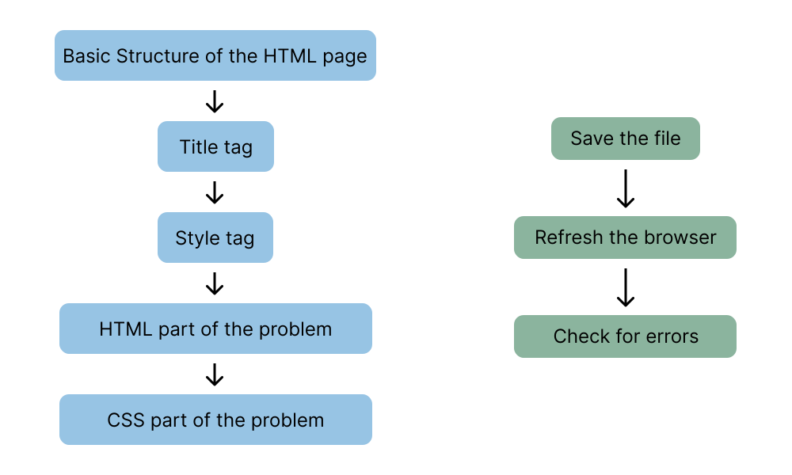

How to Create HTML/CSS files
HTML folder method
- Go to desktop
- Create a folder with your name class and section
- right click and go to new
- create a new notepad file
- name the file appropriately
- fill the contents
- save the file with the .html extension
Writing the HTML document : The right way
